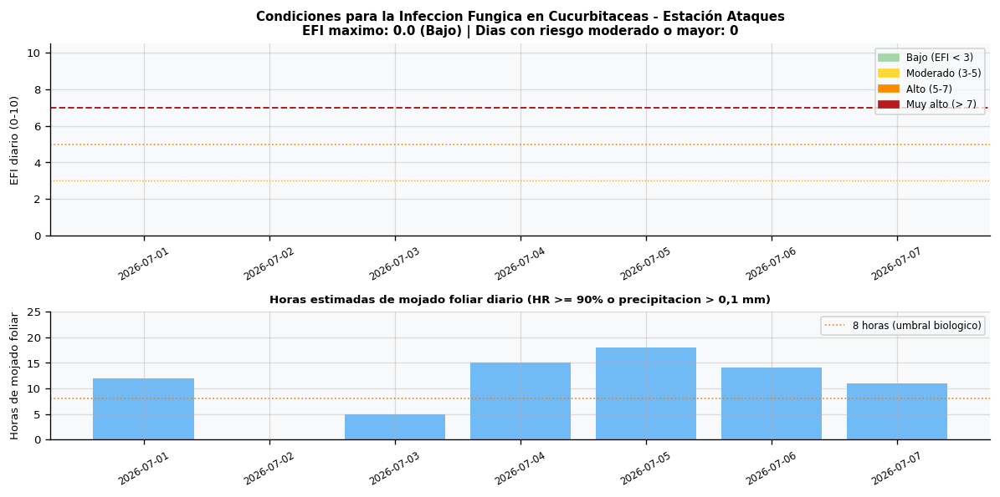
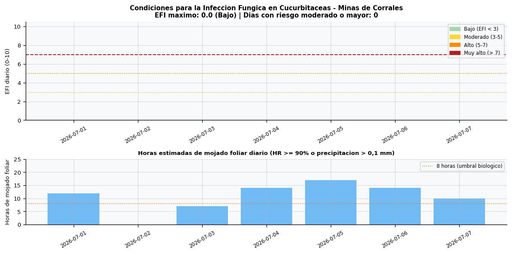
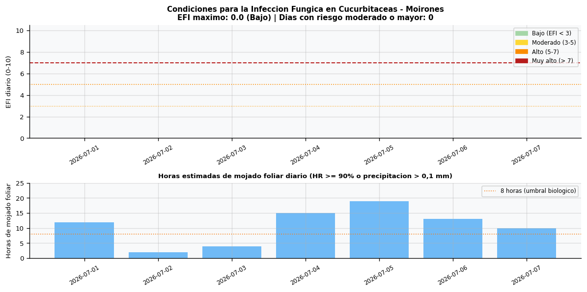
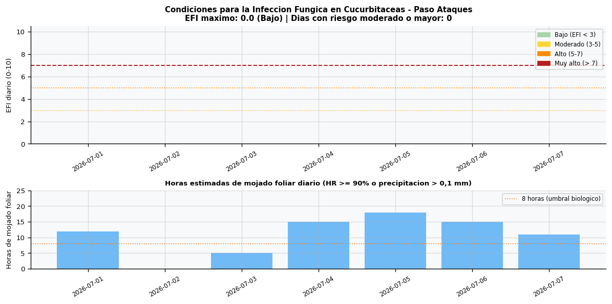
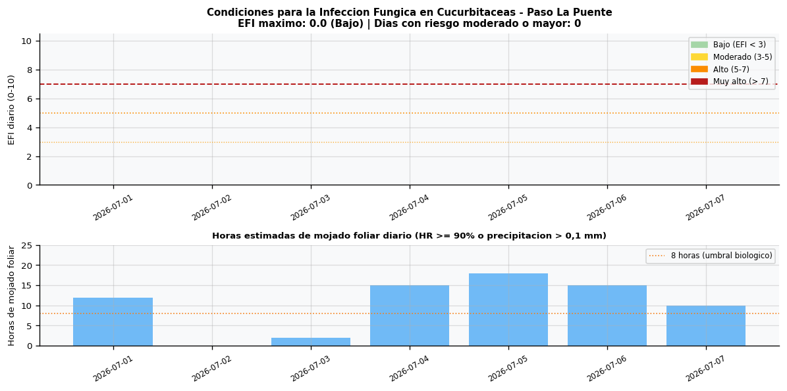
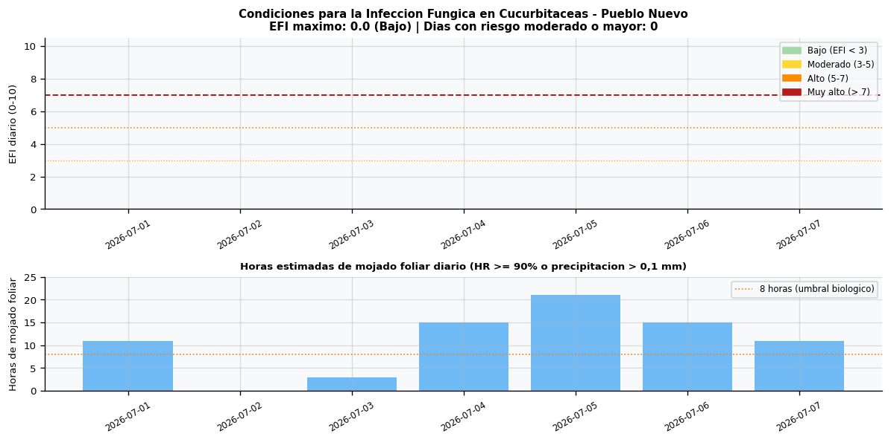
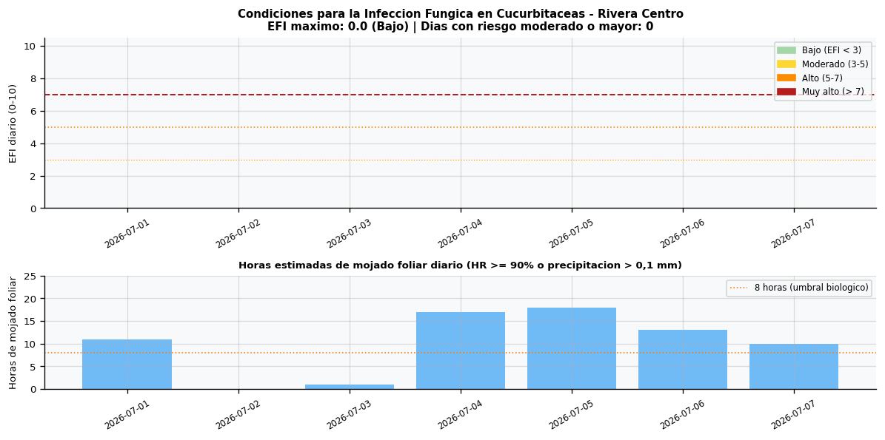
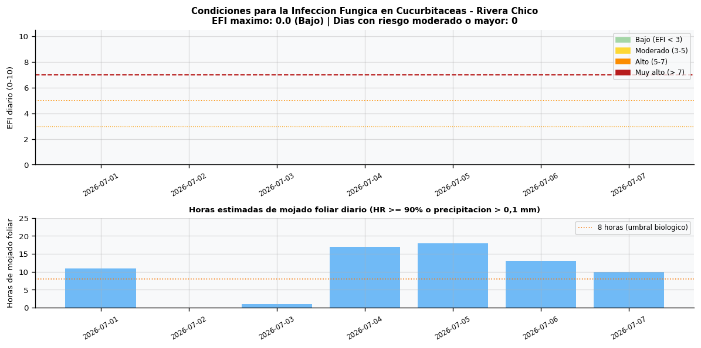
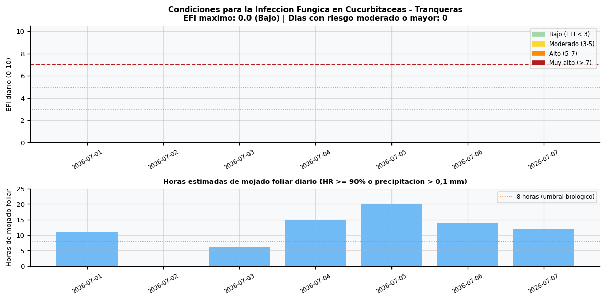
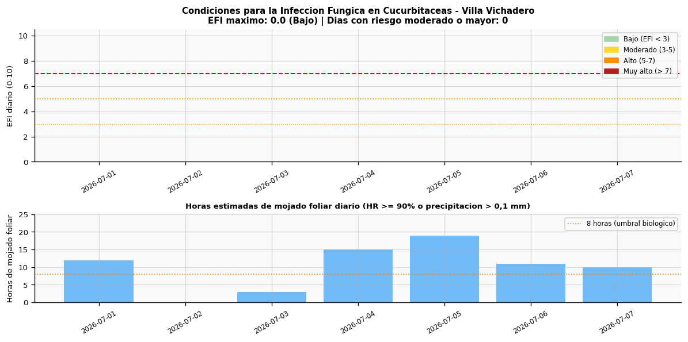

Departamento de Rivera · 2026-07-01
Herramienta de apoyo basada en modelo calibrado en Indiana, en proceso de calibracion por la Division de Desarrollo Rural. El EFI (Environmental Favorability Index) del modelo MELCAST (Latin & Egel, Purdue 2001) mide la favorabilidad diaria de las condiciones meteorologicas para que ocurra infeccion fungica en sandia. Las enfermedades objetivo son Alternaria cucumerina (mancha foliar), Colletotrichum orbiculare (antracnosis) y Didymella bryoniae (Gummy stem blight). IMPORTANTE: Este indice tiene relevancia agronomica unicamente cuando hay plantas en el campo. En Rivera el ciclo tipico es: almacigo en julio, trasplante en agosto, crecimiento vegetativo en setiembre-octubre, floracion y cuaje en noviembre-enero, cosecha en febrero-marzo. Fuera de ese calendario el EFI expresa condiciones meteorologicas pero no implica riesgo real de enfermedad. El mojado foliar se estima a partir de HR >= 90% o precipitacion > 0,1 mm.
Interpretacion: EFI < 3: Bajo | 3-5: Moderado | 5-7: Alto | > 7: Muy alto — condiciones ideales para infeccion









